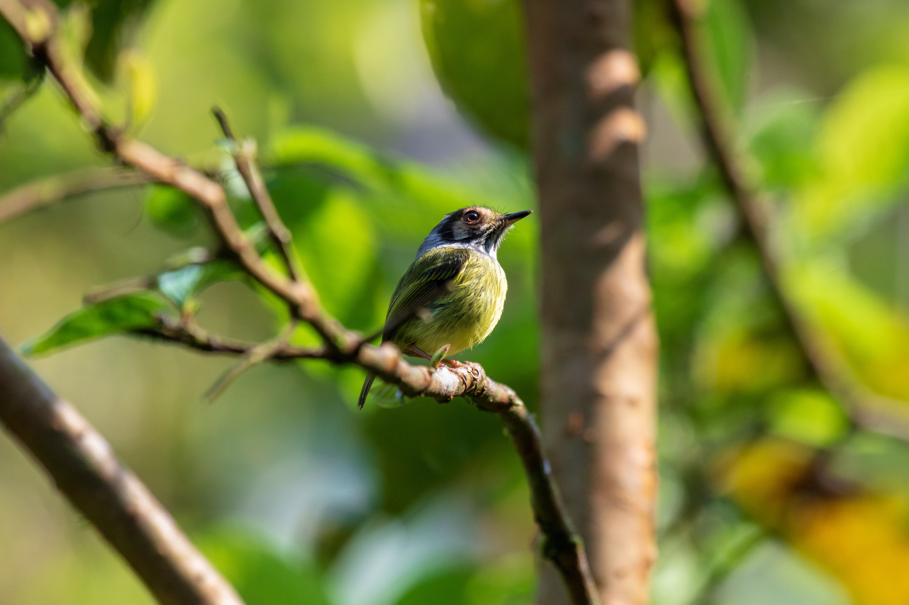

Urban Night
Captured during a late-night walk, this image explores artificial light as a dominant narrative force, isolating architectural forms against darkness.
Portrait Study
A controlled portrait emphasizing restraint and neutrality. The absence of gesture invites focus on texture, tone, and presence.


Landscape Mood
This photograph examines scale and stillness, using atmospheric compression to reduce the landscape to tonal planes.